¿Cansado de alarmas que no se adaptan a tu día?
La tecnología de WakeMap cambia la forma en que recibes alarmas. Estas son sus principales ventajas:

Alarmas basadas en ubicación
Despierta o recibe avisos solo cuando llegues a la zona que tú eliges, sin importar la hora.

Rango de activación personalizable
Define la distancia exacta en la que quieres que se active la alarma para ajustarla a tus necesidades.

Alta precisión
WakeMap utiliza tecnología avanzada para detectar tu ubicación con exactitud y activar las alarmas en el momento correcto.
¿Cómo funciona WakeMap?
1. Marca tus zonas
Define en el mapa los lugares donde quieres que las alarmas se activen.
2. Ajusta tus alarmas
Elige el rango de activación para tu alarma.
3. Deja que WakeMap haga el resto
La app detecta tu ubicación y gestiona las alarmas automáticamente.
Capturas


 Google Play
Google Play